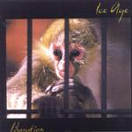

| Artist: | Ice Age |
| Title: | Liberation |
| Label: | Magna Carta MA-9051-2 |
| Length(s): | 63 minutes |
| Year(s) of release: | 2001 |
| Month of review: | [03/2001] |
| 2) | March Of The Red Dragon | 1.07 |
| 3) | The Blood Of Ages | 7.15 |
| 4) | A Thousand Years | 6.10 |
| 5) | When You're Ready | 8.58 |
| 7) | Monolith | 1.15 |
| 8) | The Guardian Of Forever | 6.48 |
| 9) | Howl | 1.41 |
| 11) | To Say Goodbye, Part III: Still Here | 8.19 |
| 12) | Tong-len | 1.34 |
After the short atmospheric instrumental March Of The Red Dragon, we move right into the plodding progmetal of The Blood Of Ages. A very heavy track this one with plenty of signature changes, rhythm guitars, but also a sad and soothing vocal part. The vocalist ascends to great height in this song during the chorus. Goosebumps stuff. I'll forgive them the quircky interlude and the way they can not seem to end the song.
Plenty of bombast and variation can be found in the more melodic A Thousand Years. The slightly dissonant guitar (at times) has a dismellowing effect. The chorus is rather poppy. Again large sweeping gestures with strong supportive keyboard work. Sometimes the band does the freak out, but the addition of fast wah-wah guitar is certainly very nice. All in all quite a bit of variation in the guitar playing on this track.
When You're Ready has quite an optimistic trend, the emotional vocals of Pincus shine on this track. A rather accessible track, but the vocal melody is quite strong and although the band can not hold themselves from filling up the sound spectrum during most of the track. After another very proggy keyboard solo (they really are on this record, much more so than on other progmetal records), we get some quiet piano playing. The soothing vocal parts starts over again. The song ends strongly anthemic with lots of vocal repetition. Again, they take a bit too long to wind the song down. More conciseness would be appreciated.
Musical Cages is quite up-beat with strong and distinctive keyboards, and the song being quite proggy, but alternated with typical progmetal ravings on guitar. Technically very complex sounding, lots going on here, but as a song I prefer the previous tracks. There are also some more melodic parts such as the piano passage and the Spocks Beardian transition from piano to jazzrockish guitar. What we get then is somewhat similar to speedy circus music. Seems like lots of fragments to me, although some parts return, there's little more merit to this piece than its pieces.
Ballad time with the short Monolith. A nice and short acoustic interlude. The Guardian Of Forever starts off at an off-beat pace. Strong bombastic keyboard linings to this song. The opening verses are not that strong, but later on Pincus shows more of his vocal prowess again and the chorus is again very good. Again a high energy track with a few soft moments, that are also the least good parts of the track.
Howl is the nice intro to The Wolf. The vocals are more metallic and rather unmelodic. Fast paced like The Blood Of Ages, it is certainly not as good.
To Say Goodbye, Part III: Still Here is the continuation of the two parts on the previous disc. Rather high keyboards run open the track, but then the repetitive riff starts. It however continues to be a rather optimistic sounding piece. In a way this song contains some very good parts, but as a whole I am not really satisfied.
Tong-Len is the closer with its dreamy, fluting keyboards, followed by some melodic piano.